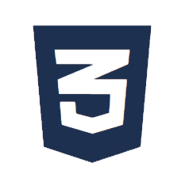
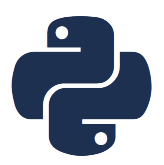

Projets
Key Finder

CSS JavaScript
PythonApplication web de gestion de traçabilité des clefs pour le secteur de l’immobilier. Mise en place de l’authentification et gestion des droits utilisateurs. Suivi du développement collaboratif via GitHub.
CALL ASSIGN
Conception et développement complet d’une application web de gestion des transferts d’appels. Mise en place d’une interface responsive et ergonomique permettant de configurer dynamiquement les lignes d’astreinte téléphonique selon les plages horaires et les secteurs d’activité. Implémentation d’un système de gestion des priorités d’appels pour optimiser le routage des communications. Déploiement d’une solution fonctionnelle et scalable, assurant une prise en charge efficace des demandes des utilisateurs. Python, Django, PostgreSQL et Asterisk
Projets ENI
Développement d’un site d’enchères sous Java EE et SQL Server : application web organisée en couches. Développement d’un site internet d’organisation de sorties entre élèves gestion des utilisateurs et des rôles, création d’un back-office pour l'administration des contenus, suivi des bonnes pratiques de développement PHP, Symfony et MySQL, ORM Doctrine
Rename-me
Contexte : Besoin de renommer rapidement des fichier *.msg avec nomenclature homogène et horodatée. Problème : Renommage manuel chronophage et source d’erreurs, absence de standardisation. Solution : Développement d’un scriptavec interface graphique, appliquant un schéma de nommage configurable. Résultat : Gain de temps significatif, suppression des erreurs humaines et uniformisation complète.
ARC
WorkClock